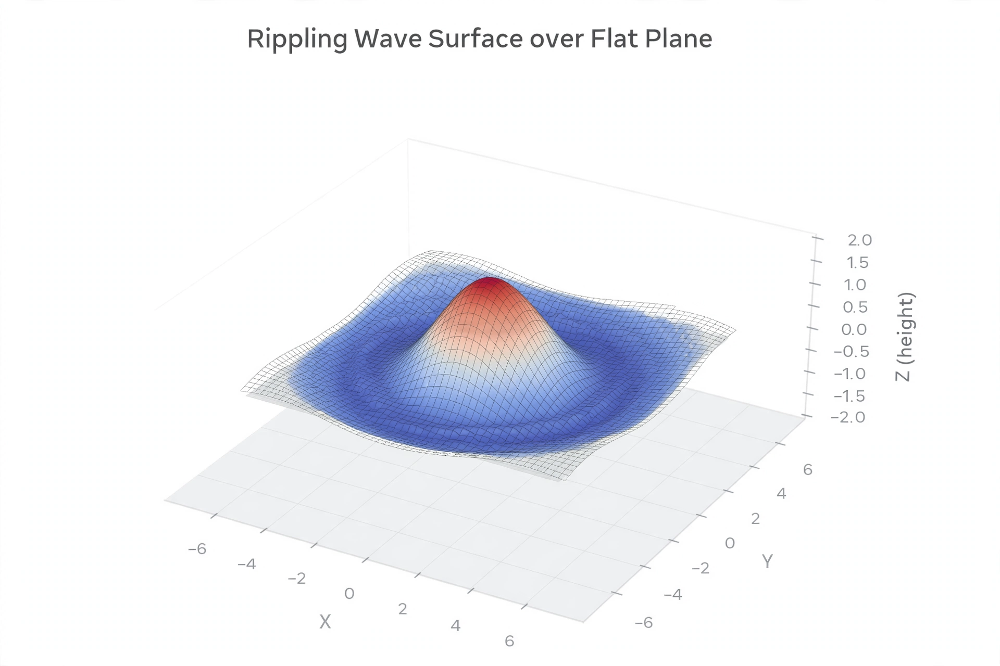

Partial differential equation

[Image: A rippling surface over a plane, a wave-equation solution]
A partial differential equation (PDE) is an equation involving a function of several variables and its partial derivatives. PDEs are the standard mathematical language of continuous physical phenomena: heat conduction, wave propagation, fluid flow, diffusion, electrostatics and quantum mechanics each have their defining equation.
The three classical prototypes are the heat equation (Fourier, 1822), the wave equation, and Laplace's equation. Joseph Fourier's work on heat introduced Fourier series and transformed both PDEs and analysis.
Solving PDEs
Exact solutions exist only for special cases; the field therefore leans on numerical methods — finite differences and finite elements — run on computers, which is how weather forecasts and engineering simulations are produced.
The Navier–Stokes equations of fluid dynamics are so poorly understood in general that proving smooth solutions always exist is one of the million-dollar Millennium Prize Problems.